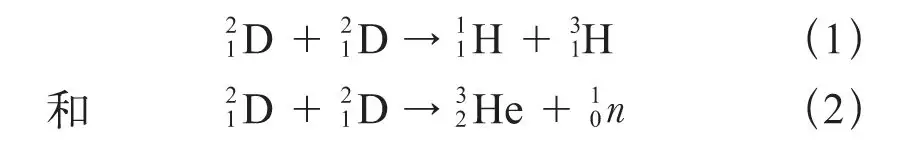
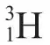
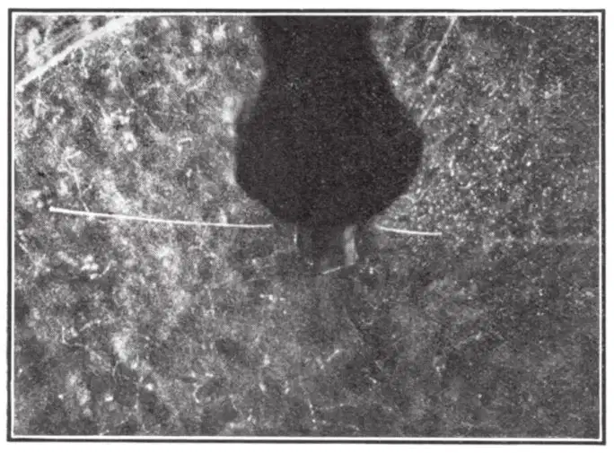
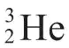
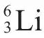
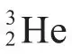

英文
英文迪伊
编者按
奥利芬特、哈特克和卢瑟福关于“氘核”（氢的同位素氘的原子核）的新近实验表明，它们可以成对发生反应生成3He和3H。这篇文章中卡文迪什实验室的一位同事菲利普·艾弗·迪伊报道了来自云室实验的部分证据。两个氘核间的反应是核物理学中最基本的反应之一，它在太阳的核聚变过程中起着重要的作用。 英文
在最近的一篇通讯[1]中，奥利芬特、哈特克和卢瑟福勋爵曾指出，用高速的氘核轰击含有重氢的化合物，可以产生三组粒子——其中两组射程分别为14.3厘米和1.6厘米的同等数目的单电荷粒子，以及一组最大能量约为3兆电子伏的中子。对于这些结果，他们提出下列反应作为可能的解释：

其中射程为1.6厘米的

原子和射程为14.3厘米的质子就能满足反应式（1）中的动量关系。在这个反应中除了因俘获氘核的动量而做了一个小修正外，可以预期质子和质量数为3的氢同位素原子会向相反的方向反冲。采用云室径迹法来检验这一可能性是非常合适的。最近，为了考察能否获取更进一步的信息，我拍摄了一些用氘核轰击硫酸“重”铵靶而产生蜕变粒子的膨胀云室照片。 英文
第一组实验把一个薄靶置于云室中心的真空管中。管的两端用具有阻断功能分别为6.3毫米和11.4厘米的云母窗封闭。云室充有适当比例的氦和空气的混合物以增加短径迹粒子的径迹长度。在这些条件下，射程为14.3厘米的粒子从真空管的厚窗中穿出，射程为1.6厘米的粒子则从另一端的薄窗中穿出并进入云室，而通常出现的二次投影可以精确测定粒子的射程以及其径迹是否共面。由于支撑薄窗的栅格的精细结构，粒子对的收集效率不可能高；另外，若射程为14.3厘米的粒子从薄窗中穿出，那么射程为1.6厘米的粒子就不能从对面的厚窗中穿出了。尽管存在这些困难，但我们观测到射程约为14.3厘米和1.6厘米的反向径迹对的频率远高于由于随机事件所导致的频率。图1这样的复印照片是一个幸运的例子，其中位于右方的短径迹是由质量数为3的氢的新同位素产生的。这些径迹的长度以及它们之间的夹角已被详细测量，稍后就会发表。 英文

图1 英文
为了研究中子发射，我们进行了同系列的第二组实验，首先，云室中充入气体混合物为含氦量50％的空气，用相同材料的靶置于3毫米厚的铅管中并以相同的方式进行轰击。在这样的条件下，我们拍摄到了31条在气体中产生的反冲径迹。假定这些径迹是由于中子碰撞产生的，那么后者似乎构成一个最大能量约为1.8兆电子伏的近似单能峰。该能量似乎与反应式（2）中以

的质量代入获得的能量值相当，这个质量可以根据由质子引起
蜕变产生的短射程产物的能量来估算[2,3,4]。反应式（2）产生的
粒子群可能的射程约为5毫米，因此不能穿过这些实验中使用的最薄窗，但是我们正在制造一个特殊的实验装置以便能够在膨胀云室中找到它们。 英文
我们的这些实验第一次使用了根据奥利芬特博士设计而制造出的新放电管。我还要感谢奥利芬特博士在我们制造放电管期间总是不厌其烦地给我们提供非常有建设性的建议。此外，我也很感激他在为上述实验准备氘靶时所提供的帮助。 英文
（王耀杨 翻译；张焕乔 审稿）